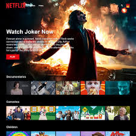
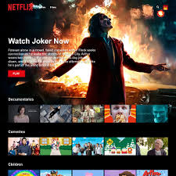

About's Me
Full Stack Developer's
Work Experience
web developer
I am a passionate Web Developer skilled in building responsive and user-friendly websites. I enjoy working with modern technologies like HTML, CSS, JavaScript, and frameworks to create dynamic solutions.
Data Scientist
"I am a data scientist skilled in extracting insights from complex datasets using advanced statistical analysis and machine learning techniques. I specialize in building predictive models and data-driven solutions that support business decisions. Passionate about turning raw data into actionable strategies, I continuously explore AI and big data technologies.
Video Editing
I am a passionate video editor who loves turning raw footage into engaging and creative stories.With skills in trimming, transitions, effects, and sound design, I bring ideas to life visually.My goal is to deliver professional, high-quality videos that connect with the audience.
UI/UX Designer
I am a passionate UI/UX Designer who creates user-friendly and visually appealing digital experiences.I specialize in designing clean interfaces, smooth interactions, and intuitive user journeys.My goal is to combine creativity with usability to craft designs that truly connect with users.
Latest Project
.jpeg) 

.jpeg)